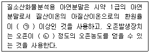
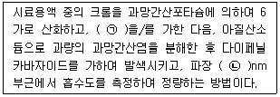
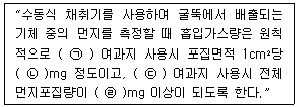
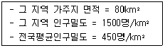
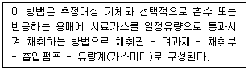
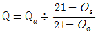
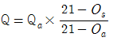
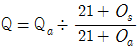
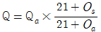
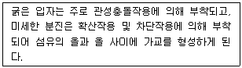

대기환경산업기사 (2018-03-04 기출문제)
1과목: 대기오염개론
1. 대기오염현상 중 광화학스모그에 대한 설명으로 거리가 먼 것은?
- 미국 로스엔젤레스에서 시작되어 자동차 운행이 많은 대도시지역에서도 관측되고 있다.
- 일사량이 크고 대기가 안정되어 있을 때 잘 발생된다.
- 주된 원인물질은 자동차배기가스 내 포함된 SO2, CO 화합물의 대기확산이다.
- 광화학산화물인 오존의 농도는 아침에 서서히 증가하기 시작하여 일사량이 최대인 오후에 최대의 경향을 나타내고 다시 감소한다.
(정답률: 72%)

2. 대기 중 탄화수소(HC)에 대한 설명으로 옳지 않은 것은?
- 지구규모의 발생량으로 볼 때 자연적 발생량이 인위적 발생량보다 많다.
- 탄화수소는 대기 중에서 산소, 질소, 염소 및 황과 반응하여 여러 종류의 탄화수소 유도체를 생성한다.
- 탄화수소류 중에서 이중결합을 가진 올레핀 화합물은 포화 탄화수소나 방향족 탄화수소보다 대기중에서의 반응성이 크다.
- 대기환경 중 탄화수소는 기체, 액체, 고체로 존재하며 탄소원자 1~12개인 탄화수소는 상온, 상압에서 기체로, 12개를 초과하는 것은 액체 또는 고체로 존재한다.
(정답률: 77%)
3. 광화학적 스모그(smog)의 3대 주요 원인요소와 거리가 먼 것은?
- 아황산가스
- 자외선
- 올레핀계 탄화수소
- 질소산화물
(정답률: 78%)
4. 다음 중 인체 내에서 콜레스테롤, 인지질 및 지방분의 합성을 저해하거나 기타 다른 영양물질의 대사장애를 일으키며, 만성폭로 시 설태가 끼는 대기오염물질의 원소기호로 가장 적합한 것은?(오류 신고가 접수된 문제입니다. 반드시 정답과 해설을 확인하시기 바랍니다.)
- Se
- Tl
- V
- Al
(정답률: 80%)
5. 다음 대기오염과 관련된 역사적 사건 중 주로 자동차 등에서 배출되는 오염물질로 인한 광화학 반응에 기인한 것은?
- 뮤즈(Meuse) 계곡 사건
- 런던(London) 사건
- 로스엔젤레스(Los Angeles) 사건
- 포자리카(Pozarica) 사건
(정답률: 88%)
6. 기본적으로 다이옥신을 이루고 있는 원소구성으로 가장 옳게 연결된 것은? (단, 산소는 2개이다.)
- 1개의 벤젠고리, 2개 이상의 염소
- 2개의 벤젠고리, 2개 이상의 불소
- 1개의 벤젠고리, 2개 이상의 불소
- 2개의 벤젠고리, 2개 이상의 염소
(정답률: 81%)
7. 포스겐에 관한 설명으로 가장 적합한 것은?
- 분자량 98.9이고, 수분 존재 시 금속을 부식시킨다.
- 물에 쉽게 용해되는 기체이며, 인체에 대한 유독성은 약한 편이다.
- 황색의 수용성 기체이며, 인체에 대한 급성 중독으로는 과혈당과 소화기관 및 중추신경계의 이상 등이 있다.
- 비점은 120℃, 융점은 -58℃ 정도로서 공기중에서 쉽게 가수분해 되는 성질을 가진다.
(정답률: 68%)
8. 다음 국제적인 환경관련 협약 중 오존층 파괴 물질인 염화불화탄소의 생산과 사용을 규제하려는 목적에서 제정된 것은?
- 람사협약
- 몬트리올의정서
- 바젤협약
- 런던협약
(정답률: 85%)
9. SO2의 식물 피해에 관한 설명으로 가장 거리가 먼 것은?
- 낮보다는 밤에 피해가 심하다.
- 식물잎 뒤쪽 표피 밑의 세포가 피해를 입기 시작한다.
- 반점 발생경향은 맥간반점을 띤다.
- 협죽도, 양배추 등이 SO2에 강한 식물이다.
(정답률: 78%)
10. A공장에서 배출되는 가스량이 480m3/min(아황산가스 0.20%(V/V)를 포함)이다. 연간 25%(부피기준)가 같은 방향으로 유출되어 인근 지역의 식물생육에 피해를 주었다고 할때, 향후 8년 동안 이 지역에 피해를 줄 아황산가스 총량은? (단, 표준상태 기준, 공장은 24시간 및 365일 연속가동 된다고 본다.)
- 약 2548톤
- 약 2883톤
- 약 3252톤
- 약 3604톤
(정답률: 62%)
11. 체적이 100m3 인 복사실의 공간에서 오존(O3)의 배출량이 분당 0.4mg 인 복사기를 연속 사용하고 있다. 복사기 사용전의 실내오존(O3)의 농도가 0.2ppm라고 할 때 3시간 사용 후 오존농도는 몇 ppb인가? (단, 환기가 되지 않음, 0℃, 1기압 기준으로 하며, 기타 조건은 고려하지 않음)
- 268
- 383
- 424
- 536
(정답률: 47%)
12. 자동차 배출가스 발생에 관한 설명으로 가장 거리가 먼 것은?
- 일반적으로 자동차의 주요 유해배출가스는 CO, NOx, HC 등이다.
- 휘발유 자동차의 경우 CO는 가속시, HC는 정속시, NOx는 감속시에 상대적으로 많이 발생한다.
- CO는 연료량에 비하여 공기량이 부족할 경우에 발생한다.
- NOx는 높은 연소온도에서 많이 발생하며, 매연은 연료가 미연소하여 발생한다.
(정답률: 88%)
13. 공기 중에서 직경 2μm의 구형 매연입자가 스토크스 법칙을 만족하며 침강할 때, 종말 침강속도는? (단, 매연입자의 밀도는 2.5g/cm3, 공기의 밀도는 무시하며, 공기의 점도는 1.81×10-4g/cm·sec)
- 0.015cm/s
- 0.03cm/s
- 0.⑤5cm/s
- 0.075cm/s
(정답률: 59%)
14. 유효굴뚝높이가 130m인 굴뚝으로부터 SO2가 30g/sec로 배출되고 있고, 유효고 높이에서 바람이 6m/sec로 불고 있다고 할 때, 다음 조건에 따른 지표면 중심선의 농도는? (단, 가우시안형의 대기오염 확산방정식 적용, σy : 220m σz : 40m)
- 0.92μg/m3
- 0.73μg/m3
- 0.56μg/m3
- 0.33μg/m3
(정답률: 30%)
15. 라디오존데(radiosonde)는 주로 무엇을 측정하는데 사용되는 장비인가?
- 고층대기의 초고주파의 주파수(20kHz 이상) 이동상태를 측정하는 장비
- 고층대기의 입자상 물질의 농도를 측정하는 장비
- 고층대기의 가스상 물질의 농도를 측정하는 장비
- 고층대기의 온도, 기압, 습도, 풍속 등의 기상요소를 측정하는 장비
(정답률: 76%)
16. 경도모델(또는 K-이론모델)을 적용하기 위한 가정으로 거리가 먼 것은?
- 연기의 축에 직각인 단면에서 오염의 농도분포는 가우스 분포(정규분포)이다.
- 오염물질은 지표를 침투하지 못하고 반사한다.
- 배출원에서 오염물질의 농도는 무한하다.
- 배출원에서 배출된 오염물질은 그 후 소멸하고, 확산계수는 시간에 따라 변한다.
(정답률: 58%)
17. 대기구조를 대기의 분자 조성에 따라 균질층(homosphere)과 이질층(heterosphere)으로 구분할 때 다음 중 균질층의 범위로 가장 적절 한 것은?
- 지상 0 ~ 50 km
- 지상 0 ~ 88 km
- 지상 0 ~ 155 km
- 지상 0 ~ 200 km
(정답률: 80%)
18. 불활성 기체로 일명 웃음의 기체라고도 하며, 대류권에서는 온실가스로, 성층권에서는 오존층 파괴물질로 알려진 것은?
- NO
- NO2
- N2O
- N2O5
(정답률: 81%)
19. 다음 중 복사역전(radiation inversion)이 가장 잘 발생하는 계절과 시기는?
- 여름철 맑은 날 정오
- 여름철 흐린 날 오후
- 겨울철 맑은 날 이른아침
- 겨울철 흐린 날 오후
(정답률: 82%)
20. 악취처리방법 중 특히 인체에 독성이 있는 악취 유발물질이 포함된 경우의 처리방법으로 가장 부적합한 것은?
- 국소환기(local ventilation)
- 흡착(adsorption)
- 흡수(absorption)
- 위장(masking)
(정답률: 78%)
2과목: 대기오염 공정시험 기준(방법)
21. 다음은 굴뚝 배출가스 중의 질소산화물을 아연환원 나프틸에틸렌디아민법으로 분석 시시약과 장치의 구비조건이다. ( )안에 알맞은 것은?

- ㉠ 65% ㉡ 부피분율 0.1%
- ㉠ 90% ㉡ 부피분율 0.1%
- ㉠ 65% ㉡ 부피분율 1%
- ㉠ 90% ㉡ 부피분율 1%
(정답률: 65%)
22. 굴뚝 배출가스 중 먼지 채취시 배출구(굴뚝)의 직경이 2.2m의 원형 단면일 때, 필요한 측정점의 반경구분수와 측정점수는?
- 반경구분수 1, 측정점수 4
- 반경구분수 2, 측정점수 8
- 반경구분수 3, 측정점수 12
- 반경구분수 4, 측정점수 16
(정답률: 74%)
23. 다음은 굴뚝 배출가스 중 크롬화합물을 자외선가시선분광법으로 측정하는 방법이다. ( )안에 알맞은 것은?

- ㉠ 아세트산, ㉡ 460
- ㉠ 요소, ㉡ 460
- ㉠ 아세트산, ㉡ 540
- ㉠ 요소, ㉡ 540
(정답률: 61%)
24. 다음은 굴뚝에서 배출되는 먼지측정방법에 관한 설명이다. ( )안에 알맞은 말을 순서대로 옳게 나열한 것은?

- ㉠ 원통형, ㉡ 0.5, ㉢ 원형, ㉣ 1
- ㉠ 원통형, ㉡ 1, ㉢ 원형, ㉣ 5
- ㉠ 원형, ㉡ 0.5, ㉢ 원통형, ㉣ 1
- ㉠ 원형, ㉡ 1, ㉢ 원통형, ㉣ 5
(정답률: 65%)
25. 굴뚝 배출가스 중의 아황산가스 측정방법 중 연속자동측정법이 아닌 것은?
- 용액전도율법
- 적외선형광법
- 정전위전해법
- 불꽃광도법
(정답률: 50%)
26. 굴뚝에서 배출되는 염소가스를 분석하는 오르토톨리딘법에서 분석용 시료의 시험온도로 가장 적합한 것은?
- 약 0℃
- 약 10℃
- 약 20℃
- 약 50℃
(정답률: 72%)
27. 굴뚝 배출가스 중 납화합물 분석을 위한 자외선가시선분광법에 관한 설명으로 옳은 것은?
- 납착염의 흡광도를 450nm에서 측정하여 정량하는 방법이다.
- 시료 중 납이온이 디티존과 반응하여 생성되는 납 디티존 착염을 사염화탄소로 추출한다.
- 납착물은 시간이 경과하면 분해되므로 20℃ 이하의 빛이 차단된 곳에서 단시간에 측정한다.
- 시료 중 납성분 추출시 시안화포타슘용액으로 세정조작을 수회 반복하여도 무색이 되지 않는 이유는 다량의 비소가 함유되어 있기 때문이다.
(정답률: 54%)
28. 아황산가스(SO2) 25.6g을 포함하는 2L용액의 몰농도(M)는?
- 0.02M
- 0.1M
- 0.2M
- 0.4M
(정답률: 68%)
29. 비분산적외선분광분석법에 관한 설명으로 옳지 않은 것은?
- 선택성 검출기를 이용하여 적외선의 흡수량 변화를 측정하여 시료중 성분의 농도를 구하는 방법이다.
- 광원은 원칙적으로 니크롬선 또는 탄화규소의 저항체에 전류를 흘려 가열한 것을 사용한다.
- 대기중 오염물질을 연속적으로 측정하는 비분산 정필터형 적외선 가스분석계에 대하여 적용한다.
- 비분산(Nondispersive)은 빛을 프리즘이나 회절격자와 같은 분산소자에 의해 충분히 분산되는 것을 말한다.
(정답률: 60%)
30. 링겔만 매연 농도표를 이용한 방법에서 매연측정에 관한 설명으로 옳지 않은 것은?(오류 신고가 접수된 문제입니다. 반드시 정답과 해설을 확인하시기 바랍니다.)
- 농도표는 측정자의 앞 16cm에 놓는다.
- 농도표는 굴뚝배출구로부터 30~45cm 떨어진 곳의 농도를 관측 비교한다.
- 측정자의 눈높이에 수직이 되게 관측 비교한다.
- 매연의 검은 정도를 6종으로 분류한다.
(정답률: 72%)
31. 대기오염공정시험기준상 용기에 관한 용어 정의로 옳지 않은 것은?
- 용기라 함은 시험용액 또는 시험에 관계된 물질을 보존, 운반 또는 조작하기 위하여 넣어두는 것으로 시험에 지장을 주지 않도록 깨끗한 것을 뜻한다.
- 밀폐용기라 함은 물질을 취급 또는 보관하는 동안에 이물이 들어가거나 내용물이 손실되지 않도록 보호하는 용기를 뜻한다.
- 기밀용기라 함은 광선을 투과하지 않은 용기 또는 투과하지 않게 포장을 한 용기로서 취급 또는 보관하는 동안에 내용물의 광화학적 변화를 방지할 수 있는 용기를 뜻한다.
- 밀봉용기라 함은 물질을 취급 또는 보관하는 동안에 기체 또는 미생물이 침입하지 않도록 내용물을 보호하는 용기를 뜻한다.
(정답률: 81%)
32. 환경대기 중 아황산가스 농도를 측정함에 있어 파라로자닐린법을 사용할 경우 알려진 주요 방해물질과 거리가 먼 것은?
- Cr
- O3
- NOx
- NH3
(정답률: 64%)
33. 어느 지역에 환경기준시험을 위한 시료채취 지점수(측정점수)는 약 몇 개소 인가? (단, 인구비례에 의한 방법기준)

- 6 개소
- 11개소
- 18 개소
- 23 개소
(정답률: 70%)
34. 환경대기 중 먼지를 고용량 공기시료 채취기로 채취하고자 한다. 이 방법에 따른 시료채취 유량으로 가장 적합한 것은?
- 10~300L/min
- 0.5~1.0m3/min
- 1.2~1.7m3/min
- 2.2~2.8m3/min
(정답률: 51%)
35. 비분산적외선분광분석법에서 분석계의 최저눈금값을 교정하기 위하여 사용하는 가스는?
- 비교가스
- 제로가스
- 스팬가스
- 혼합가스
(정답률: 81%)
36. 자외선가시선분광법에서 장치 및 장치 보정에 관한 설명으로 옳지 않은 것은?
- 가시부와 근적외부의 광원으로는 주로 텅스텐램프를 사용하고 자외부의 광원으로는 주로 중수소 방전관을 사용한다.
- 일반적으로 흡광도 눈금의 보정은 110℃에서 3시간 이상 건조한 과망간산칼륨(1급이상)을 N/10 수산화소듐 용액에 녹인 과망간산소듐 용액으로 보정한다.
- 광전관, 광전자증배관은 주로 자외 내지 가시파장 범위에서 광전도셀은 근적외 파장범위에서, 광전지는 주로 가시파장 범위 내에서의 광전측광에 사용된다.
- 광전광도계는 파장 선택부에 필터를 사용한 장치로 단광속형이 많고 비교적 구조가 간단하여 작업분석용에 적당하다.
(정답률: 65%)
37. 다음은 환경대기 시료 채취방법에 관한 설명이다. 가장 적합한 것은?

- 용기채취법
- 채취용 여과지에 의한 방법
- 고체흡착법
- 용매채취법
(정답률: 73%)
38. 굴뚝 내의 배출가스 유속을 피토우관으로 측정한 결과 그 동압이 2.2mmHg 이었다면 굴뚝내의 배출가스의 평균유속(m/sec)은? (단, 배출가스 온도 250℃, 공기의 비중량 1.3kg/Sm3, 피토우관계수 1.2 이다.)
- 8.6
- 16.9
- 25.5
- 35.3
(정답률: 42%)
39. 대기오염공정시험기준에서 정하고 있는 온도에 대한 설명으로 옳지 않은 것은?
- 냉수 : 15℃ 이하
- 찬 곳은 따로 규정이 없는 한 0~15℃ 의 곳
- 온수 : 35~50℃
- 실온 : 1~35℃
(정답률: 77%)
40. 다음 중 배출가스유량 보정식으로 옳은 것은? (단, Q : 배출가스유량(Sm3/일), Os : 표준산소농도(%), Oa : 실측산소농도(%), Qa : 실측배출가스유량(Sm3/일))




(정답률: 69%)
3과목: 대기오염방지기술
41. 다음 연소장치 중 대용량 버너제작이 용이하나, 유량조절범위가 좁아(환류식 1:3, 비환류식 1:2 정도) 부하변동에 적응하기 어려우며, 연료 분사범위가 15~2000L/hr 정도인 것은?
- 회전식 버너
- 건타입 버너
- 유압분무식 버너
- 고압기류 분무식 버너
(정답률: 65%)
42. 두 개의 집진장치를 직렬로 연결하여 배출가스 중의 먼지를 제거하고자 한다. 입구 농도는 14g/m3 이고, 첫 번째와 두 번째 집진장치의 집진효율이 각각 75%, 95%라면 출구 농도는 몇 mg/m3인가?
- 175
- 211
- 236
- 241
(정답률: 52%)
43. 여과집진장치의 간헐식 탈진방식에 관한 설명으로 옳지 않은 것은?
- 분진의 재비산이 적다.
- 높은 집진율을 얻을 수 있다.
- 고농도, 대용량의 처리가 용이하다.
- 진동형과 역기류형, 역기류 진동형이 있다.
(정답률: 58%)
44. 중유 1kg에 수소 0.15kg, 수분 0.002kg 이 포함되어 있고, 고위발열량이 10000kcal/kg일 때, 이 중유 3kg의 저위발열량은 대략 몇 kcal인가?
- 29990
- 27560
- 10000
- 9200
(정답률: 58%)
45. 미분탄연소의 장점으로 거리가 먼 것은?
- 연소량의 조절이 용이하다.
- 비산먼지의 배출량이 적다.
- 부하변동에 쉽게 응할 수 있다.
- 과잉공기에 의한 열손실이 적다.
(정답률: 52%)
46. 같은 화학적 조성을 갖는 먼지의 입경이 작아질 때 입자의 특성변화에 관한 설명으로 가장 적합한 것은?
- stokes식에 따른 입자의 침강속도는 커진다.
- 중력집진장치에서 집진효율과는 무관하다.
- 입자의 원심력은 커진다.
- 입자의 비표면적은 커진다.
(정답률: 67%)
47. 벤젠을 함유한 유해가스의 일반적 처리방법은?
- 세정법
- 선택환원법
- 접촉산화법
- 촉매연소법
(정답률: 65%)
48. 흡수탑을 이용하여 배출가스 중의 염화수소를 수산화나트륨 수용액으로 제거하려고 한다. 기상 총괄이동단위높이(HOG)가 1m인 흡수탑을 이용하여 99%의 흡수효율을 얻기 위한 이론적 흡수탑의 충전높이는?
- 4.6m
- 5.2m
- 5.6m
- 6.2m
(정답률: 52%)
49. 배출가스 중 질소산화물의 처리방법인 촉매환원법에 적용하고 있는 일반적인 환원가스와 거리가 먼 것은?
- H2S
- NH3
- CO2
- CH4
(정답률: 46%)
50. 연료에 관한 다음 설명 중 가장 거리가 먼 것은?
- 중유는 인화점을 기준으로 하여 주로 A, B, C 중유로 분류된다.
- 인화점이 낮을수록 연소는 잘되나 위험하며, C 중유의 인화점은 보통 70℃ 이상이다.
- 기체연료는 연소시 공급연료 및 공기량을 밸브를 이용하여 간단하게 임의로 조절할 수 있어 부하변동범위가 넓다.
- 4℃ 물에 대한 15℃ 중유의 중량비를 비중이라고 하며, 중유 비중은 보통 0.92 ~ 0.97정도이다.
(정답률: 63%)
51. 세정집진장치에서 관성충돌계수를 크게 하는 조건이 아닌 것은?
- 먼지의 밀도가 커야 한다.
- 먼지의 입경이 커야 한다.
- 액적의 직경이 커야 한다.
- 처리가스와 액적의 상대속도가 커야 한다.
(정답률: 63%)
52. 원형관에서 유체의 흐름을 파악하는데 레이놀드수(NRe)가 사용되는 데, 다음 중 레이놀드수와 거리가 먼 것은?
- 관의 직경
- 유체 점도
- 입자의 밀도
- 유체 평균유속
(정답률: 62%)
53. 공극률이 20%인 분진의 밀도가 1700 kg/m3이라면, 이 분진의 겉보기 밀도(kg/m3)는?
- 1280
- 1360
- 1680
- 2040
(정답률: 54%)
54. 분자식이 CmHn인 탄화수소가스 1Sm3의 완전연소에 필요한 이론산소량(Sm3)은?
- 4.8m + 1.2n
- 0.21m + 0.79n
- m + 0.56n
- m + 0.25n
(정답률: 54%)
55. 원심력 집진장치에 대한 설명으로 옳지 않은 것은?
- 사이클론의 배기관경이 클수록 집진율은 좋아진다.
- 블로다운(blow down) 효과가 있으면 집진율이 좋아진다.
- 처리 가스량이 많아질수록 내통경이 커져 미세한 입자의 분리가 안된다.
- 입구 가스속도가 클수록 압력손실은 커지나 집진율은 높아진다.
(정답률: 52%)
56. 다음은 무엇에 관한 설명인가?

- 브리지(bridge) 현상
- 블라인딩(blinding) 현상
- 블로다운(blow down) 효과
- 디퓨저 튜브(diffuser tube) 현상
(정답률: 74%)
57. 자동차 배출가스에서 질소산화물(NOx)의 생성을 억제시키거나 저감시킬 수 있는 방법과 가장 거리가 먼 것은?
- 배기가스 재순환장치(EGR)
- De-NOx 촉매장치
- 터보차저 및 인터쿨러 사용
- 외관 도장실시
(정답률: 74%)
58. 배기가스 중에 부유하는 먼지의 응집성에 관한 설명으로 옳지 않은 것은?
- 미세 먼지입자는 브라운 운동에 의해 응집이 일어난다.
- 먼지의 입경이 작을수록 확산운동의 영향을 받고 응집이 된다.
- 먼지의 입경분포 폭이 작을수록 응집하기 쉽다.
- 입자의 크기에 따라 분리속도가 다르기 때문에 응집한다.
(정답률: 56%)
59. 전기집진장치에서 방전극과 집진극 사이의 거리가 10cm, 처리가스의 유입속도가 2m/sec, 입자의 분리속도가 5cm/sec일 때, 100% 집진 가능한 이론적인 집진극의 길이(m)는? (단, 배출가스의 흐름은 층류이다.)
- 2
- 4
- 6
- 8
(정답률: 58%)
60. 흡착에 관한 다음 설명 중 옳은 것은?
- 물리적 흡착은 가역성이 낮다.
- 물리적 흡착량은 온도가 상승하면 줄어든다.
- 물리적 흡착은 흡착과정의 발열량이 화학적 흡착보다 많다.
- 물리적 흡착에서 흡착물질은 임계온도 이상에서 잘 흡착된다.
(정답률: 50%)
4과목: 대기환경 관계 법규
61. 대기환경보전법상 환경부장관은 대기오염물질과 온실가스를 줄여 대기환경을 개선하기 위한 대기환경개선 종합계획을 몇 년마다 수립하여 시행하여야 하는가?
- 3년
- 5년
- 10년
- 15년
(정답률: 52%)
62. 대기환경보전법규상 정밀검사대상 자동차 및 정밀검사 유효기간기준으로 옳지 않은 것은?
- 비사업용 승용자동차로서 차령 4년 경과된 자동차의 검사유효기간은 2년이다.
- 비사업용 기타자동차로서 차령 3년 경과된 자동차의 검사유효기간은 1년이다.
- 사업용 승용자동차로서 차령 2년 경과된 자동차의 검사유효기간은 2년이다.
- 사업용 기타자동차로서 차령 2년 경과된 자동차의 검사유효기간은 1년이다.
(정답률: 69%)
63. 악취방지법규상 지정악취물질인 메틸아이소뷰틸케톤의 악취배출허용기준은? (단, 단위는 ppm이며, 공업지역)
- 35 이하
- 30 이하
- 4 이하
- 3 이하
(정답률: 48%)
64. 악취방지법규상 악취배출시설 중 가죽제조시설(원피저장시설)의 용적규모(기준)는?
- 1m3이상
- 2m3이상
- 5m3이상
- 10m3이상
(정답률: 52%)
65. 대기환경보전법규상 한국환경공단이 환경부장관에게 행하는 위탁업무 보고사항 중 “자동차 배출가스 인증생략 현황”의 보고횟수 기준으로 옳은 것은?
- 연 4회
- 연 2회
- 연 1회
- 수시
(정답률: 62%)
66. 대기환경보전법규상 구분하고 있는 건설기계에 해당하는 종류와 거리가 먼 것은?
- 불도저
- 골재살포기
- 천공기
- 전동식 지게차
(정답률: 67%)
67. 대기환경보전법규상 자동차연료 제조기준 중 90% 유출온도(℃) 기준으로 옳은 것은? (단, 휘발유 적용)
- 200 이하
- 190 이하
- 180 이하
- 170 이하
(정답률: 70%)
68. 대기환경보전법규상 사업자 등은 굴뚝배출가스 온도측정기를 새로 설치하거나 교체하는 경우에는 국가표준기본법에 의한 교정을 받아야 하는데 그 기록은 최소 몇 년 이상 보관하여야 하는가?
- 1년 이상
- 2년 이상
- 3년 이상
- 10년 이상
(정답률: 62%)
69. 대기환경보전법령상 대기오염 경보단계 중 “중대경보 발령”시 조치사항만으로 옳게 나열한 것은?
- 자동차 사용의 자제 요청, 사업장의 연료사용량 감축 권고
- 주민의 실외활동 및 자동차 사용의 자제 요청
- 자동차 사용의 제한명령 및 사업장의 연료사용량 감축 권고
- 주민의 실외활동 금지 요청, 사업장의 조업시간 단축명령
(정답률: 68%)
70. 대기환경보전법상 한국자동차환경협회의 정관으로 정하는 업무와 가장 거리가 먼 것은? (단, 그 밖의 사항 등은 고려하지 않는다.)
- 운행차 저공해화 기술개발 및 배출가스저감장치의 보급
- 자동차 배출가스 저감사업의 지원과 사후관리에 관한 사항
- 운행차 배출가스 검사와 정비기술의 연구ㆍ개발사업
- 삼원촉매장치의 판매와 보급
(정답률: 75%)
71. 대기환경보전법규상 환경기술인을 임명하지 아니한 경우 4차 행정처분기준으로 옳은 것은?
- 경고
- 조업정지5일
- 조업정지10일
- 선임명령
(정답률: 71%)
72. 실내공기질 관리법규상 신축 공동주택의 실내공기질 권고기준으로 옳지 않은 것은?
- 에틸벤젠 360μg/m3 이하
- 폼알데하이드 210μg/m3 이하
- 벤젠 300μg/m3 이하
- 톨루엔 1000μg/m3 이하
(정답률: 61%)
73. 대기환경보전법규상 환경부령으로 정하는 바에 따라 사업자 스스로 방지시설을 설계ㆍ시공하고자 하는 사업자가 시ㆍ지도사에게 제출해야 하는 서류로 가장 거리가 먼 것은?
- 기술능력 현황을 적은 서류
- 공사비내역서
- 공정도
- 방지시설의 설치명세서와 그 도면
(정답률: 62%)
74. 대기환경보전법규상 2016년 1월 1일 이후 제작자동차의 배출가스 보증기간 적용기준으로 옳지 않은 것은?
- 휘발유 경자동차 : 15년 또는 240000km
- 휘발유 대형 승용ㆍ화물자동차 : 2년 또는 160000km
- 가스 초대형 승용ㆍ화물자동차 : 2년 또는 160000km
- 가스 경자동차 : 5년 또는 80000km
(정답률: 54%)
75. 대기환경보전법규상 제1차 금속 제조시설 중 금속의 용융ㆍ용해 또는 열처리시설에서 대기오염물질 배출시설기준으로 옳지 않은 것은?
- 시간당 100킬로와트 이상인 전기아크로(유도로를 포함한다)
- 노상면적이 4.5제곱미터 이상인 반사로
- 1회 주입 연료 및 원료량의 합계가 0.5톤 이상인 제선로
- 1회 주입 원료량이 0.5톤 이상이거나 연료사용량이 시간당 30킬로그램 이상인 도가니로
(정답률: 49%)
76. 대기환경보전법령상 사업자가 기본부과금의 징수유예나 분할납부가 불가피하다고 인정되는 경우, 기본부과금의 징수유예기간과 분할납부 횟수기준으로 옳은 것은?
- 유예한 날의 다음 날부터 다음 부과기간의 개시일 전일까지, 24회 이내
- 유예한 날의 다음 날부터 다음 부과기간의 개시일 전일까지, 12회 이내
- 유예한 날의 다음 날부터 다음 부과기간의 개시일 전일까지, 6회 이내
- 유예한 날의 다음 날부터 다음 부과기간의 개시일 전일까지, 4회 이내
(정답률: 49%)
77. 대기환경보전법상 이륜자동차 소유자는 배출가스가 운행차배출허용기준에 맞는지 이륜자동차 배출가스 정기검사를 받아야 한다. 이를 받지 아니한 경우 과태료 부과기준으로 옳은 것은?
- 100만원 이하의 과태료를 부과한다.
- 50만원 이하의 과태료를 부과한다.
- 30만원 이하의 과태료를 부과한다.
- 10만원 이하의 과태료를 부과한다.
(정답률: 61%)
78. 대기환경보전법규상 자동차연료 검사기관은 검사대상 연료의 종류에 따라 구분하고 있는데, 다음 중 그 구분으로 옳지 않은 것은?
- 휘발유 ㆍ 경유 검사기관
- 오일샌드 ㆍ 셰일가스 검사기관
- 엘피지(LPG) 검사기관
- 천연가스(CNG) ㆍ 바이오가스 검사기관
(정답률: 67%)
79. 대기환경보전법령상 초과부과금 부과대상 오염물질과 거리가 먼 것은?
- 이황화탄소
- 염화수소
- 탄화수소
- 염소
(정답률: 54%)
80. 대기환경보전법령상 초과부과금 산정기준에서 다음 오염물질 중 오염물질 1킬로그램당 부과금액이 가장 큰 것은?
- 불소화합물
- 암모니아
- 시안화수소
- 황화수소
(정답률: 67%)